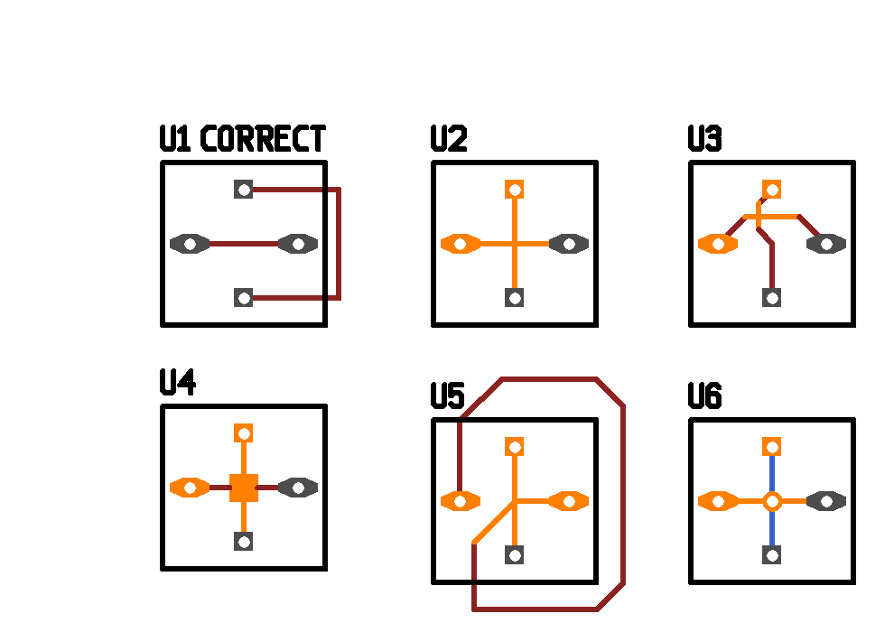

pcb-rnd - the [mincut] patch
The original code was highlighting pins/pads only when a short came around
after rats nest optimization. This was not very helpful on a complex board.
There had been a long discussion on the mailing list about the best solutions.
There were a few very good ideas, including:
- manual tagging of objects (lines, polys, arcs, vias) with net and warn
where two differently tagged net connects
- automatic tagging based on "where it was connected first", then the same
warning mechanism as above
- trace history (using the undo buffer?) and go back until when it was
not broken, check what exactly broke it
- history combined with tagging
- calculate minimal cut
I choose minimal cut for my patch because it doesn't require tracing the
full history or any manual administration of nets vs. objects (which I
would find inevitable even with manual tagging - directly or indirectly
the user needs to be able to change net tags).
The minimal cut is the least amount of object whose removal would resolve
the short. It is best demonstrated on an example:

Removing all the marked lines/polys/vias would surely resolve the short
(sometimes leaving rat lines behind). Minimal cut is better than randomly
removing objects, tho: it guarantees that the minimal amount of objects
are to be removed. On a complex board, this place is likely to be close
to the place where the problem really is - much closer than the pins/pads.
save/load and compatibility
This patch does not affect the file format.
plans
Finished, no plans.